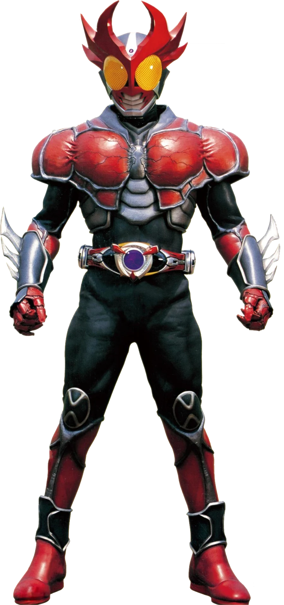
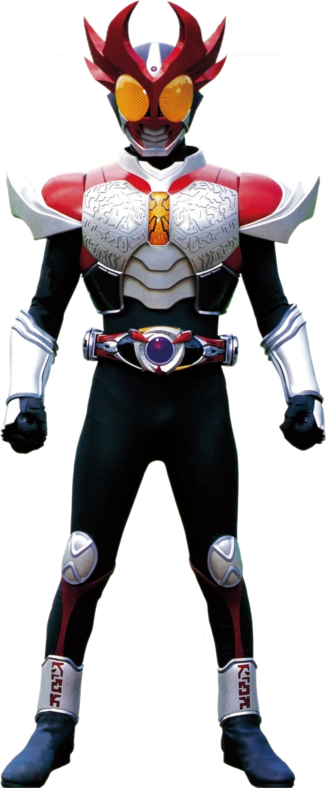

Shoichi Tsugami is the main protagonist of Kamen Rider Agito. He is a young man who transforms into Kamen Rider Agito
Kamen rider Agito has many other forms that helps him in battle.
Agito Forms: Each forms are very unique to eachother in many ways.
Ground form is Agito's standard form and the typical form of an Agito. Unarmed in this form, Agito uses crushing blows and physical techniques to fight his opponents. Ground Form is the most balanced of Agito's forms.
Rider Statistics[3]
Rider Height: 195 cm
Rider Weight: 95 kg
Rider Senses[3]
Eyesight: 10 Km
Hearing: 10 Km
Ability Parameters[3]
Punching Power: 7 t (15 t with horns deployed)
Kicking Power: 10 15 t (30 t with horns deplyed)
Resistance: Hardness 6
Maximum Jump Height: 30 m
Maximum Running Speed: 100 m per 5 seconds
Agito's agile form, accessed by pressing only the left-hand pad of the Altering. This form harnesses the power of wind through Agito's left arm and grants Agito increased agility and reflexes. However, Storm Form is by far the weakest of Agito's forms in terms of power and strength
Rider Statistics[2]
Rider Height: 195 cm
Rider Weight: 95 kg
Rider Senses[2]
Eyesight: 10 Km
Hearing: 10 10 Km
Ability Parameters[5]
Punching Power: 3t (right arm) / 7t (left arm)
Kicking Power: 5 t
Resistance: Hardness 7
Maximum Jump Height: 50 m
Maximum Running Speed: 100 m per 4.5 seconds
Flame form is Agito's attack-focused form, accessed by pressing only the right-hand pad of the Altering. This form harnesses the power of flame through Agito's right arm and grants Agito increased punching power and reflexes. However, its jump height and running speed are lower than both Ground Form and Storm Form.
Rider Statistics[8]
Rider Height: 195 cm
Rider Weight: 95 kg
Rider Senses[8]
Eyesight: 30 km
Hearing: 30 km
Ability Parameters[8]
Punching Power: 10 t (right arm) / 5 t (left arm.)
Kicking Power: 7t
Resistance: Hardness 8
Maximum Jump:Height:20m
Maximum Running:100 m per 5.5 seconds
Trinity form is Agito's upgrade form accessed when Shoichi Tsugami briefly recovered his memory. It combines the powers and strengths of Ground Form, Storm Form, and Flame Form. In this form, Agito can wield both the Storm Halberd and the Flame Saber
Rider Statistics[9]
Rider Height: 195 cm
Rider Weight: 95 kg
Rider Senses[9]
Eyesight: 30km
Hearing: 30km
Ability Parameters[2]
Punching Power: 10t (right arm) / 7t (left arm)
Kicking Power: 15t
Resistance: Hardness 8
Maximum Jump Height: 50 m
Maximum Running Speed: 100 m per 4.5 seconds

Burning form is Agito's super form, first accessed when Shoichi learns to channel his fighting spirit into power. Its incredible power is difficult to control and damages the body
Rider Statistics[2]
Rider Height: 195 cm
Rider Weight: 95 kg
Rider Senses[2]
Eyesight: 30 km
Hearing: 30 km
Ability Parameters[2]
Punching Power: 25 t
Kicking Power: 15 t
Resistance: Hardness 10
Maximum Jump Height: 90 m
Maximum Running Speed: 100 m per 6

Shining form is Agito's final form, awoken when Agito mastered the power of Burning Form and saw the light of the sun
Rider Statistics[2]